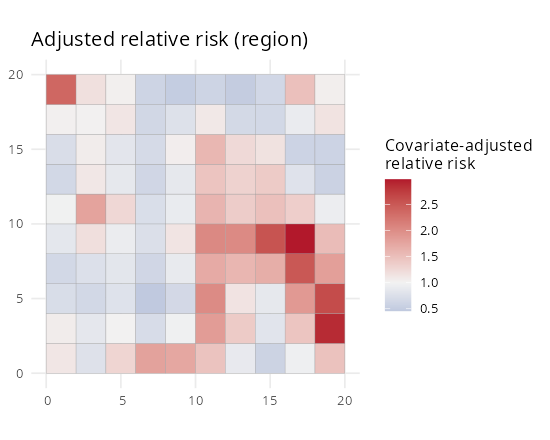
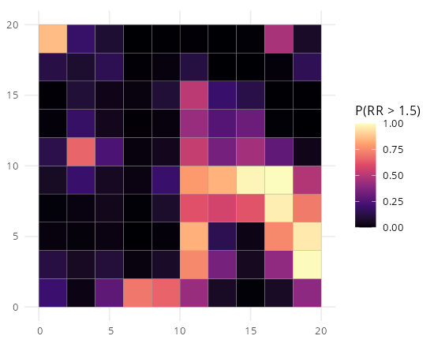
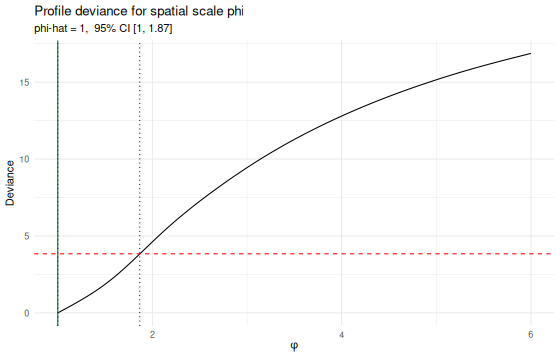

A faster, modernised successor to SDALGCP for fitting a Spatially Discrete Approximation to a Log-Gaussian Cox Process (SDA-LGCP) to spatially aggregated disease counts (Johnson, Diggle & Giorgi, 2019).
SDALGCP2 keeps the statistical method but
- moves the performance-critical kernels (aggregated correlation assembly, the Newton Laplace mode + MALA sampler, and the Monte Carlo likelihood) into C++ via RcppArmadillo + OpenMP — ~8–10× faster end-to-end on a 64-region example, returning the same estimates as
SDALGCP; - drops orphaned/legacy dependencies (
geoR,sp,raster,spacetime,mapview,splancs,pdist,maxLik) for a leansf/terra/starsstack; - ships a proper post-fit mapping & diagnostics layer (relative-risk and uncertainty maps, exceedance probabilities, φ-profile CI, coefficient plots, residual Moran’s I checking);
- adds a no-MCMC Laplace fast path for prediction.
See DESIGN.md for the full analysis, bottleneck ranking and roadmap.
Status: active development. The spatial fit, prediction and visualisation are working and parity-verified against
SDALGCP. Planned next: continuous-φ (grid-free) estimation, raster/continuous predictors via intensity-scale aggregation, a nugget term, importance-sampling diagnostics, and a Kronecker-free spatio-temporal path.
Quick start (fully simulated, reproducible)
library(SDALGCP2)
library(sf)
set.seed(1)
shp <- st_sf(geometry = st_make_grid(
st_as_sfc(st_bbox(c(xmin = 0, ymin = 0, xmax = 20, ymax = 20))), n = c(10, 10)))
N <- nrow(shp)
# simulate aggregated counts with a spatial signal + covariate
pts <- sda_points(shp, delta = 1, method = 3)
corr <- precompute_corr(pts, seq(1, 6, length.out = 10))
Sig <- 0.6 * corr$R[, , 5]
x1 <- as.numeric(scale(rowSums(st_coordinates(st_centroid(shp)))))
pop <- round(runif(N, 500, 3000))
y <- rpois(N, pop * exp(cbind(1, x1) %*% c(-6, 0.4) +
as.numeric(t(chol(Sig)) %*% rnorm(N))))
dat <- data.frame(y = y, x1 = x1, pop = pop)
# fit (points -> correlation -> Monte Carlo ML), all in one call
ctrl <- control_mcmc(n.sim = 6000, burnin = 1500, thin = 6, h = 1.65 / N^(1/6))
fit <- SDALGCP2(y ~ x1 + offset(log(pop)), dat, shp,
delta = 1, phi = seq(1, 6, length.out = 10), control.mcmc = ctrl)
summary(fit)
# predict and map
pred_d <- predict(fit, type = "discrete")
pred_c <- predict(fit, type = "continuous", sampler = "laplace", cellsize = 0.7)
plot(pred_d, "ARR", midpoint = 1) # covariate-adjusted relative risk
plot(pred_c, "RR", bound = shp) # continuous relative-risk surface
map_exceedance(pred_d, threshold = 1.5) # hotspot probabilities
phi_profile(fit) # profile-deviance CI for phi
coef_plot(fit) # estimates with CIs
model_check(fit, pred_d) # observed vs fitted + residual Moran's IWhat you get after fitting
| Adjusted relative risk | Exceedance P(RR > 1.5) | Profile deviance for φ |
|---|---|---|
 |
 |
 |
Estimating the spatial scale: grid vs direct
The scale phi enters only through a double integral of the correlation function over each pair of regions, R_ij(phi) = ∫∫ w_i(x) w_j(y) exp(-||x-y||/phi) dx dy, approximated by a weighted sum over candidate points. SDALGCP2 offers two ways to estimate it:
fit_grid <- SDALGCP2(..., phi_method = "grid") # profile over the phi grid (default)
fit_direct <- SDALGCP2(..., phi_method = "direct") # optimise phi continuouslyThe direct method differentiates through the integral (closed-form dR/dphi, d²R/dphi²) and optimises (beta, sigma², phi) jointly, so it avoids grid-discretisation error and returns a proper standard error for phi from the joint Hessian. Full, numerically-verified derivation: math/continuous-phi-derivation.pdf.
Spatially continuous (raster) covariates
Covariates supplied as rasters enter the model at the candidate-point level, inside the exponential, and are aggregated on the intensity scale through a log-sum-exp offset
b_i(beta) = log sum_k w_ik exp( z(x_ik)' beta ) # NOT (mean of z over region)' betaThis is the statistically correct alternative to averaging the predictor over each polygon, which is biased under the nonlinear log link whenever the covariate varies within regions. SDALGCP2_raster() fits it by a Gauss-Newton fixed point that reuses the standard machinery.
fit <- SDALGCP2_raster(y ~ z + offset(log(pop)), data = dat, my_shp = shp,
delta = 0.5, rasters = z_raster, phi = phi_grid)With a covariate that has sharp sub-region features (e.g. point exposure sources, below), averaging over polygons is badly biased while intensity-scale aggregation recovers the truth:

True z effect: 1.00
NAIVE areal-average: 1.67 (bias +67%)
SDALGCP2_raster: 1.06 (bias +6%)See scripts/raster_covariates_demo.R and DESIGN.md §3b.